Refleja tu Estilo con cada Outfit
Desde la combinacion mas sencilla hasta la mas elegante resaltara mas si usas los complementos adecuados. Estamos acostumbradros a que las mujeres son las que siempre llevan accesorios. Pero, tambien los hay para hombres y algunos son impredesibes.
¿Que seria de ese traje de fiesta sin la corbata perfecta, o de la camisa sin gemelos? No es solo que algo te hace fata, sino que esta mal.
Traje casual y elegante
Los accesorios que escoges tener en tu guardarropa haran la diferencia entre el outfit para el trabajo y una salida con tus amigos. O entre una salida de fin de semana y una cita con la chica que te gusta. Atrevete a cambiar los complementos y mirar con tus propios ojos como cambias tu aspecto.
Los lentes, el reloj, tarjetero, bolso, el cinturon... hasta el llavero que usas refleja tu personalidad.
Marca la diferencia en tu zona de confor
¿Vas a diario a la oficina vestido de traje, pero no quieres lucir igual que los demas? Que tal si agregas un alfiler para la corbata y un par de gemelos en el puño de la camisa. Son elementos que te haran resaltar y que hacen ver elegante a cualquier hombre.
Read MoreCambia tu estilo formal a un estilo mas casual
¿Tienes una cita despues del trabajo y no tienes tiempo de ir a cambiarte? Para verte mas relajado cambia los zapatos por uno mas casuales o sustituye la corbata por una bufanda.
Read MoreReloj
¿Es imprencindible, no solo es util y te servira para llegar a tiempo a donde vayas. Tener al menos uno es cuestion de estilo y dice mucho sobre ti. Te importa la imagen que reflejas, te proyectaras como alguien organizado
Read MoreGafas de sol
Junto al reloj las gafas de sol son otro accesorio que necesitas en tu dia a dia. Un par de gafas puede ir bien con cualquier estilo, pero si prefieres tener vairias para distintas ocaciones, no hay problema.
Las gafas agregan un extra a tu estilo, al mismo tiempo que protegen tus ojos.
Corbatas
Si eres de los hombre que siguen las reglas para usar trajes de etiquetas sabras que siempre deben ir acompañados de una corbata o una pajarita, Cualquiera de los dos que elijan dependera del tipo de traje y de la ocacion.
En este caso nos referimos a las corbatas. Pueden tener todas las que quieras en tu armario y no estan limitadas para ocaciones formales.
Cartera
Puedes tener una para ocaciones formales y otra mas casual. incluso, ya no solo las encontraras en el tamaño clasico para colocar en el bolsillo del pantalon. Hay algunas que son un poco mas grandes.
Read MoreCinturones
Tener un cinturon de calidad es imprecindible. Estos accesorios son muy versatiles y tambien los encontraras de distintos materiales y cabados. Los de piel son los mas elegantes y deberias tener al menos uno.
Read MoreCalcetines
Al elegir los calcetines que llevaras con un pantalon de vestir, lo recomendable es que sean del mismo color. Hay hombres a los que les gusta experimentar con la moda, si es tu caso, trata de escoger un tono que sea de la misma gama.
Read MoreZapatos
Los zapatos completan cualquier estilo que lleves. Necesitas tener, al menos, un par para eventos formales, otro para ocaciones elegantes, unas zapatillas casuales y unas deportivas
Read More 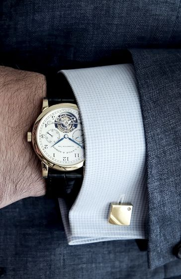
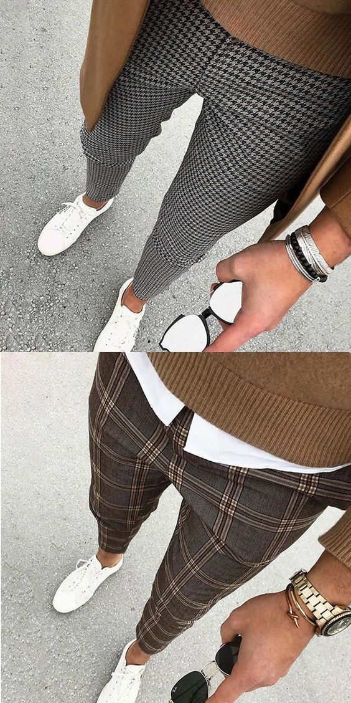
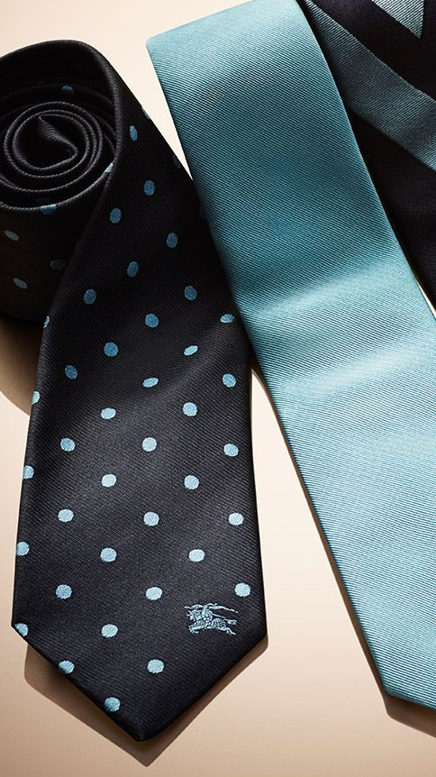
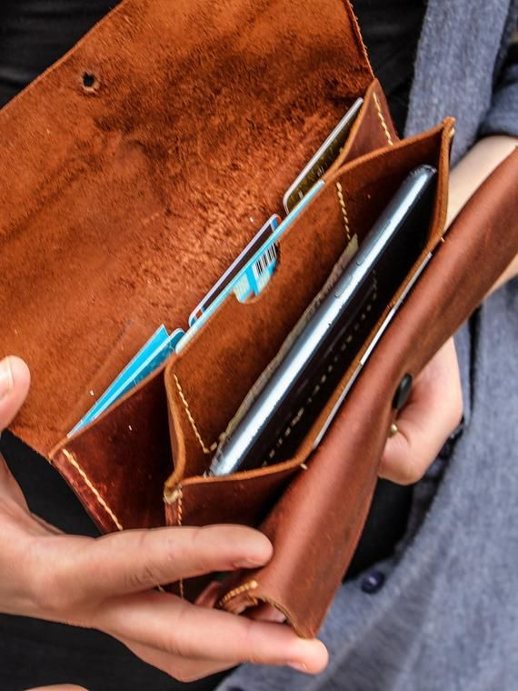
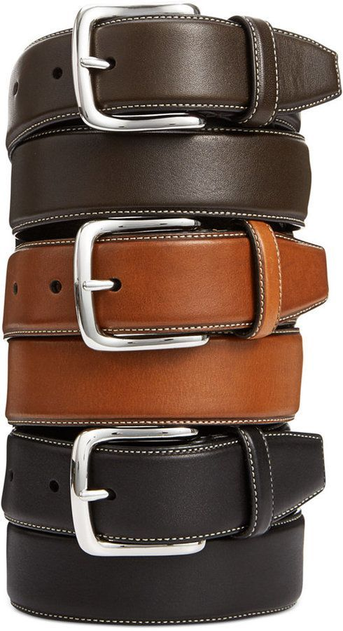
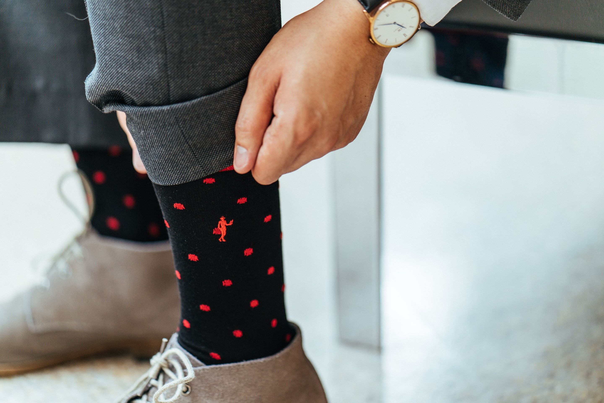
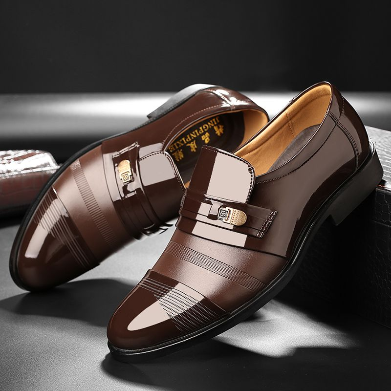
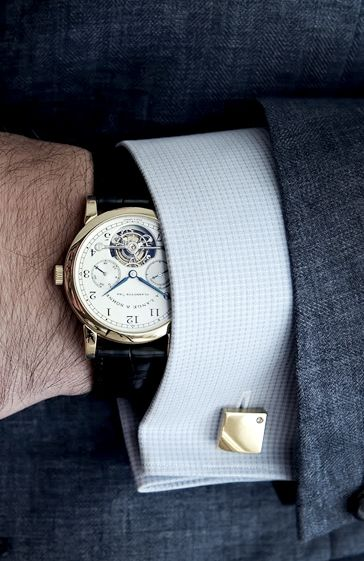
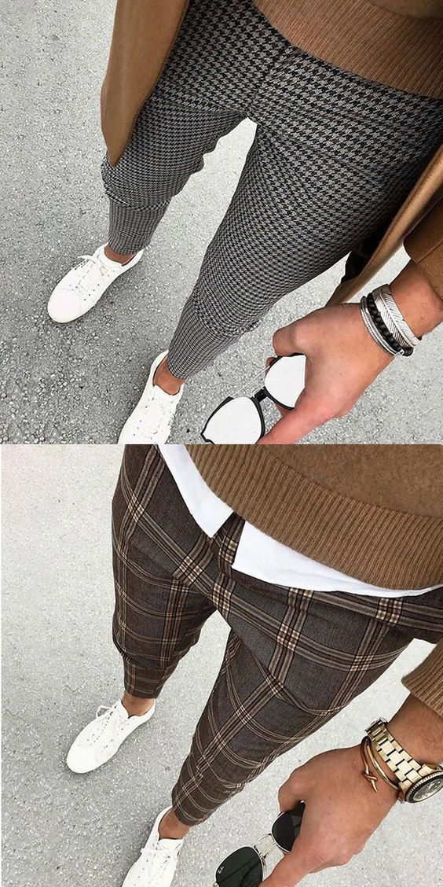
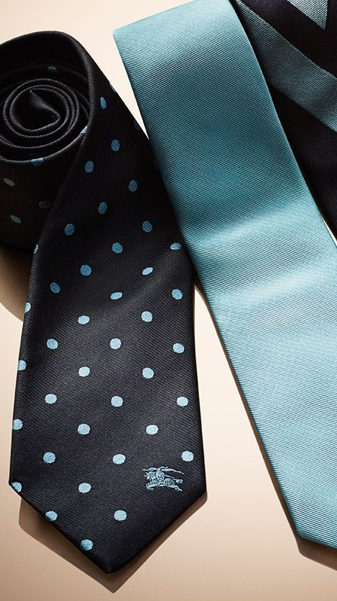
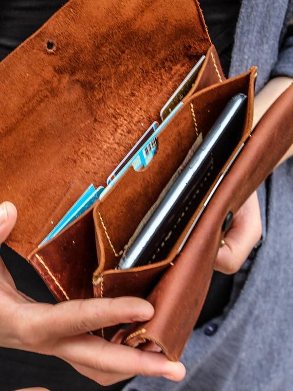
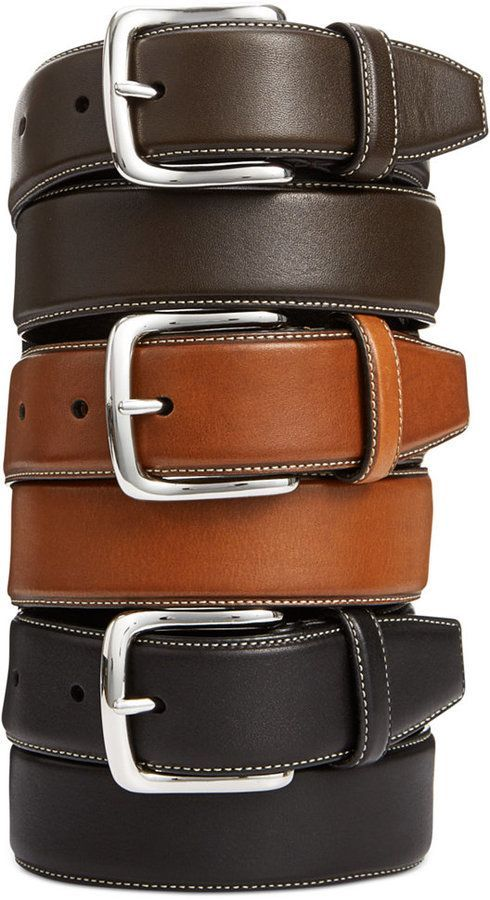
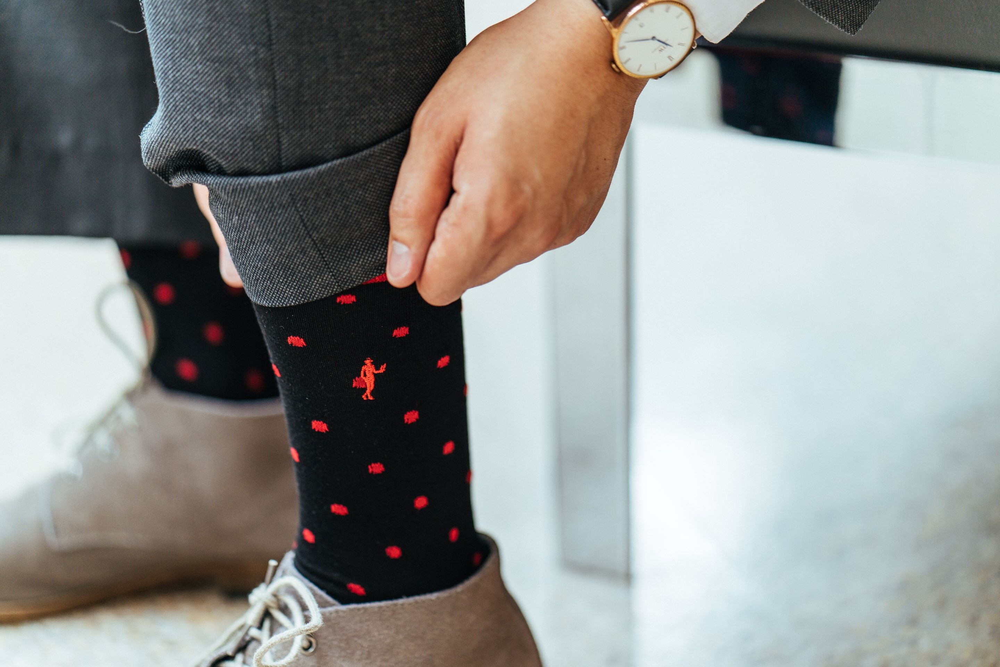
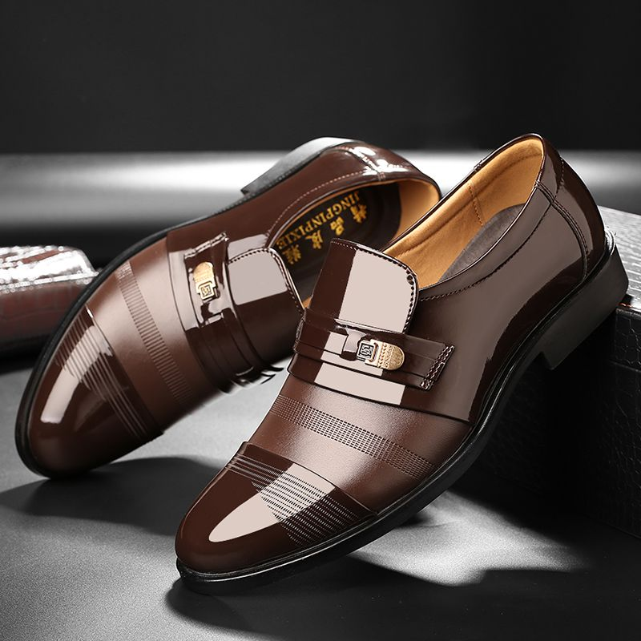